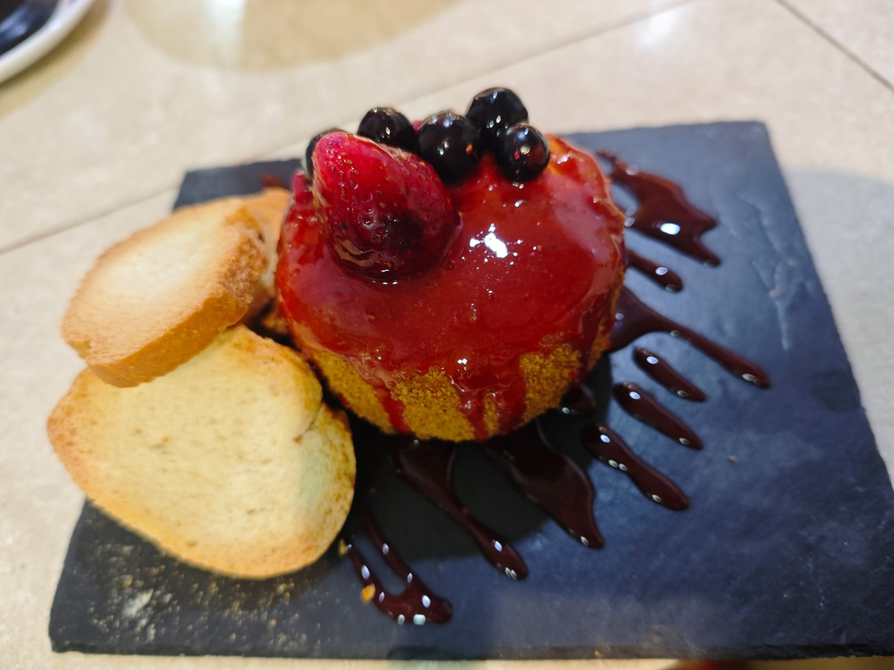

Tapitas
- Lomo doblado bellota8€
- Queso de oveja curado7€
- Tosta de sardina ahumada7€
- Bombón de rulo de cabra6€
Bar Restaurante · Badajoz
Disfruta de raciones, carnes, pescados, ensaladas y platos para compartir en un ambiente cómodo para comidas, cenas y copas.
Plaza de los Alféreces 10 · Badajoz
Martes a jueves: 18:00–00:00 · Viernes y sábado: 12:00–00:00
En Popina preparamos platos pensados para compartir: croquetas, bacalao dorado, ensaladilla de pulpo y langostinos, carnes, pescados y propuestas de temporada.
Solomillo de cerdo con salsa a elegir, cachopo de ternera, pulpo a la plancha, sepia, rejos, croquetas mixtas y tapas para empezar.
Reservas
Para comidas, cenas, celebraciones o grupos, contacta directamente por WhatsApp.
WhatsApp: 619 991 176
Dirección: Plaza de los Alféreces 10, Badajoz
Horario:
Martes a jueves: 18:00 - 00:00
Viernes y sábado: 12:00 - 00:00
Dónde estamos


